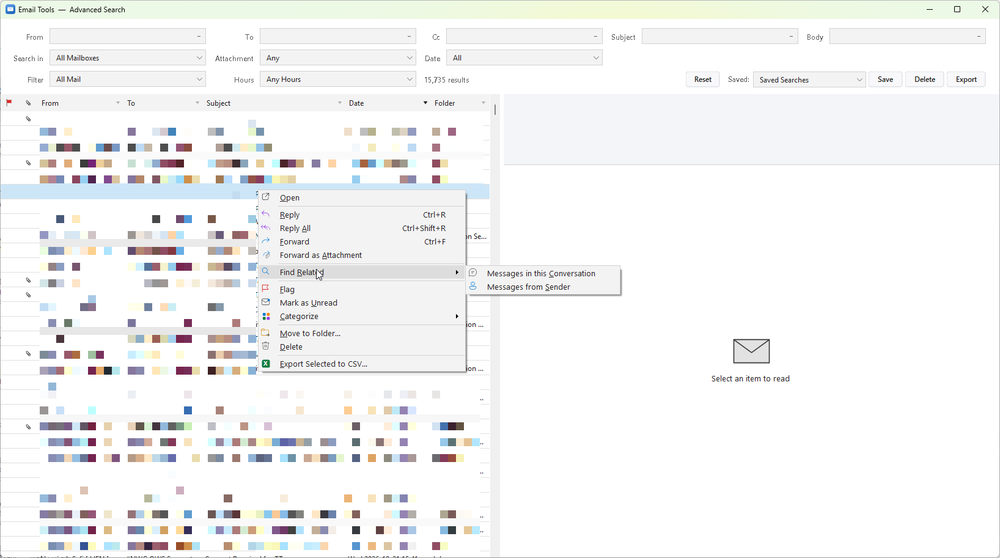
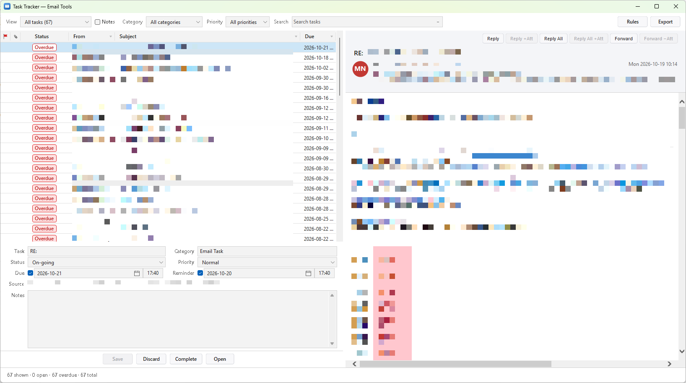

Find more than a keyword.
Combine sender, recipient, body, date and attachment filters. Search indexed mail and mounted PSTs, then preview and act on the result.
Built for classic Outlook · Version 1.2.0
Search across your mailbox and mounted archives, turn emails into tasks, and manage storage—right inside Outlook.
Windows 10 / 11 · Classic Outlook, 32-bit & 64-bit · Free for personal and internal business use

Less searching. Clearer follow-ups.
Keep the tools you need close to the messages you work with.
Combine sender, recipient, body, date and attachment filters. Search indexed mail and mounted PSTs, then preview and act on the result.
Track an email as a task with a due date, priority and notes. Use rules to create tasks and keep the source message within reach.
Use automatic capacity protection, run archiving manually, or turn archiving off while keeping search and tasks available.
From message to next step
Task Tracker keeps the source email, task details and notes together. Search tracked work without losing the message behind it.

Storage, on your terms
Real views from Email Tools 1.2.0. Click any screenshot to see it at full size.
Control automatic archiving and set the mailbox capacity threshold that fits your workflow.
Check mailbox usage, archive storage and search-index status in one view.
Keep a chosen percentage of the newest Inbox messages and archive older ones into seasonal PSTs.
Get started
Get EmailTools_Setup.rar from the official GitHub release and extract the installer.
Save drafts, close Outlook and run EmailTools_Setup.exe. Existing settings and databases are retained during upgrades.
Find the Email Tools ribbon tab. Allow the local index to finish before expecting complete search results.